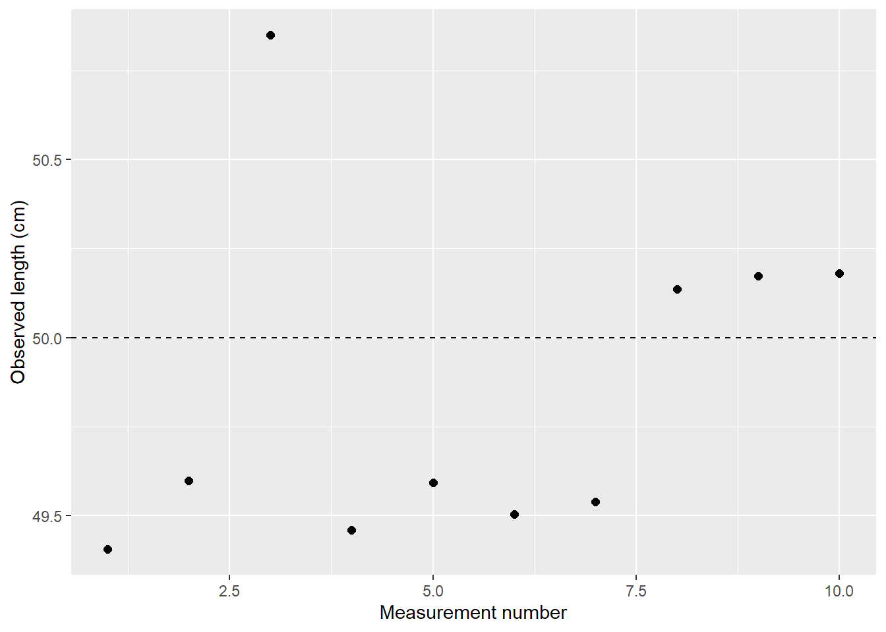
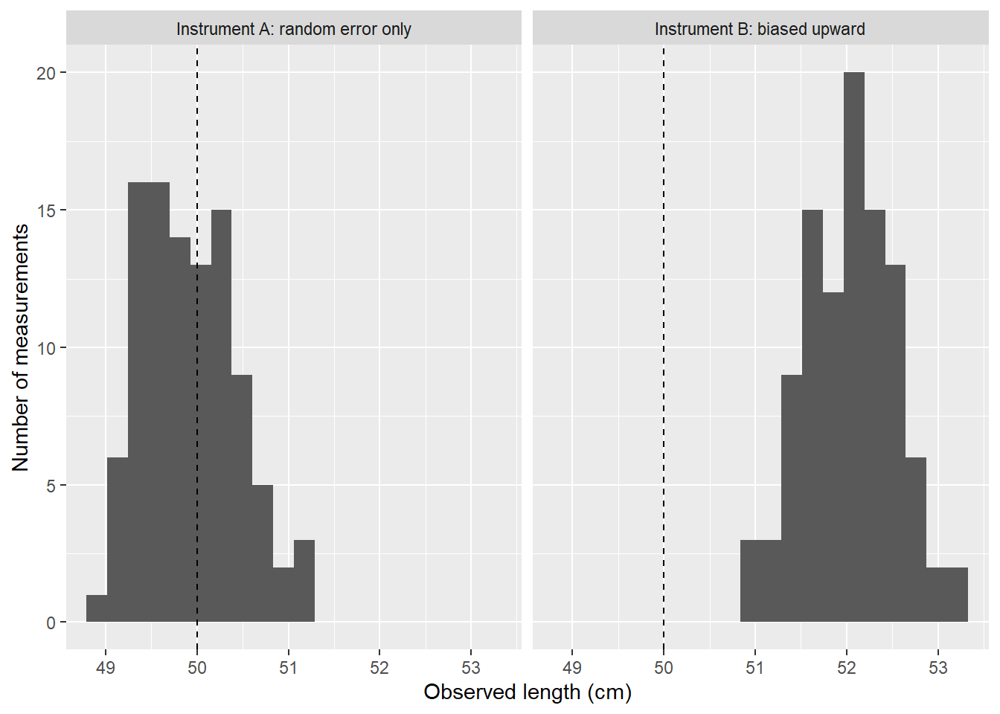
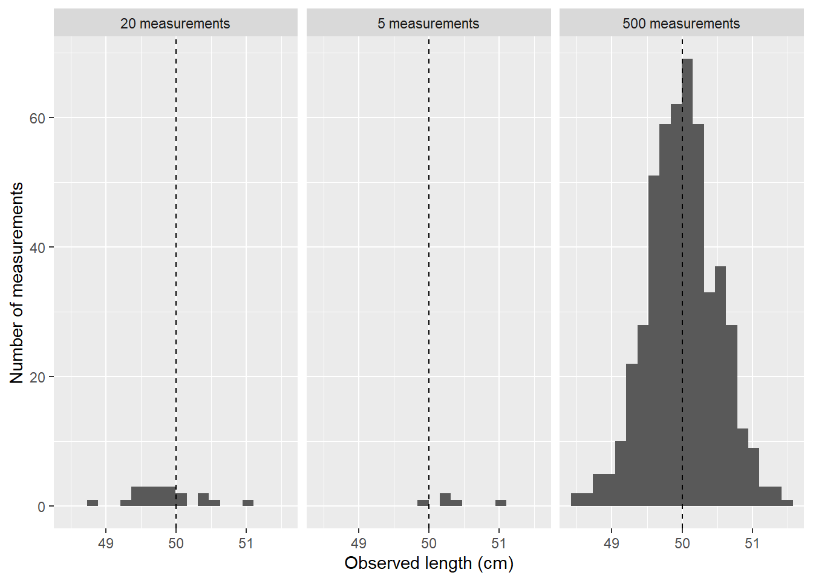
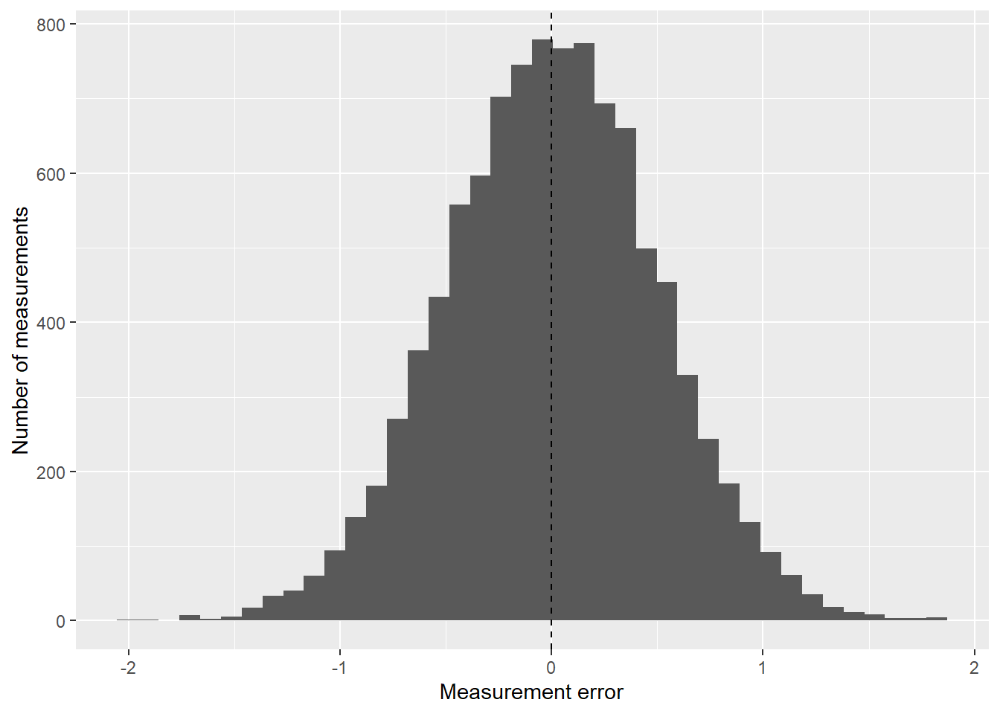
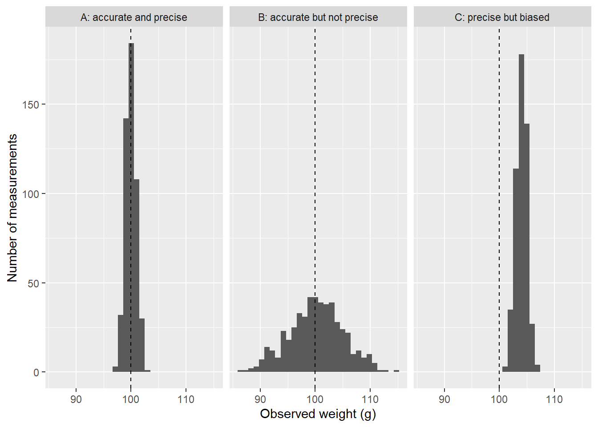

library(...)
library(...)Tutorial: Measurement, error, and variation
Tutorial task: Measuring something more than once
In Chapter 3, we saw that a number is not the same thing as the thing we want to understand. A number is produced by a measurement process, and that process can contain error.
In this tutorial, we will work with a simple example: measuring the length of an object.
Imagine that the true length of an object is:
\[ 50 \text{ cm} \]
In real life, we usually do not get to see the true value directly. We see measurements. A ruler, scale, thermometer, poll, exam, or rating system gives us an observed value. That observed value might be close to the truth, but it may not be exact.
A useful way to think about this is:
\[ \text{Observed value} = \text{True value} + \text{Error} \]
The error may be mostly random, meaning the observed value varies unpredictably from one measurement to the next. Or it may be systematic, meaning the measurement process tends to push values in one direction.
In this tutorial, you will use R to simulate repeated measurements. You will compare random error and systematic error, calculate means and standard deviations, and see how the bell curve can emerge from many small measurement errors.
In this tutorial
In this tutorial, we will:
- simulate repeated measurements of a true value;
- distinguish random error from systematic error;
- calculate the mean and standard deviation of repeated measurements;
- compare accurate, precise, biased, and noisy measurement processes;
- explore why small samples can be misleading;
- use simulation to see how repeated measurements can stabilise;
- connect measurement error to the normal distribution and the bell curve.
The key idea is that variation is not just a nuisance. Variation tells us something about the measurement process.
Coding measurement error in R
We will build the code slowly. Some parts of the code have been left blank using .... Your task is to replace the ... with the correct code.
Question 1: Load the packages
We will use tidyverse for data wrangling and plotting, and gt for tables.
Complete the code below.
Click for solution
library(tidyverse)
library(gt)The tidyverse package gives us functions such as tibble(), mutate(), summarise(), and ggplot(). The gt package helps us display tables neatly.
Question 2: Store the true value
Imagine that the true length of an object is 50 cm.
Create an object called true_length that stores this value.
true_length <- ...
true_length
Click for solution
true_length <- 50
true_length[1] 50This object stores the value we are trying to measure. In a real measurement problem, we may not know the true value. Here, we set it ourselves so that we can study how measurement error behaves.
Question 3: Simulate one measurement
Suppose the measuring process has random error. Sometimes the measurement is slightly too high. Sometimes it is slightly too low.
We can simulate one observed measurement using rnorm().
set.seed(2420)
rnorm(n = ..., mean = ..., sd = ...)Use:
n = 1to generate one measurement;mean = true_lengthto centre the measurement around the true value;sd = 0.5to allow a small amount of random error.
Click for solution
set.seed(2420)
rnorm(n = 1, mean = true_length, sd = 0.5)[1] 49.40537The function rnorm() generates values from a normal distribution.
Here, the measurements are centred around 50, but they can vary slightly because sd = 0.5.
Question 4: Write a measurement function
It will be useful to write a function that simulates one measurement.
The function should have three arguments:
true_value: the value we are trying to measure;random_error_sd: the size of the random error;systematic_error: a constant amount added to every measurement.
Complete the function below.
measure_once <- function(true_value, random_error_sd, systematic_error = 0) {
rnorm(
n = ...,
mean = ... + ...,
sd = ...
)
}
measure_once(true_value = true_length, random_error_sd = 0.5)
Click for solution
measure_once <- function(true_value, random_error_sd, systematic_error = 0) {
rnorm(
n = 1,
mean = true_value + systematic_error,
sd = random_error_sd
)
}
measure_once(true_value = true_length, random_error_sd = 0.5)[1] 49.59758This function simulates one observed measurement.
If systematic_error = 0, the measurement is centred on the true value. If systematic_error = 2, the measurement process is biased upward by 2 cm.
Question 5: Simulate repeated measurements
One measurement does not tell us much. Let us measure the same object 10 times.
Complete the code below.
set.seed(2420)
measurements_10 <- tibble(
measurement = 1:...,
observed_length = map_dbl(
measurement,
~ measure_once(
true_value = ...,
random_error_sd = ...
)
)
)
measurements_10
Click for solution
set.seed(2420)
measurements_10 <- tibble(
measurement = 1:10,
observed_length = map_dbl(
measurement,
~ measure_once(
true_value = true_length,
random_error_sd = 0.5
)
)
)
measurements_10# A tibble: 10 × 2
measurement observed_length
<int> <dbl>
1 1 49.4
2 2 49.6
3 3 50.8
4 4 49.5
5 5 49.6
6 6 49.5
7 7 49.5
8 8 50.1
9 9 50.2
10 10 50.2The function map_dbl() repeats the measurement function and stores the results as numeric values.
Each row is one measurement of the same object.
Question 6: Calculate the error
The error is the difference between the observed value and the true value:
\[ \text{Error} = \text{Observed value} - \text{True value} \]
Add a column called error.
measurements_10 <- measurements_10 |>
mutate(
error = ... - ...
)
measurements_10
Click for solution
measurements_10 <- measurements_10 |>
mutate(
error = observed_length - true_length
)
measurements_10# A tibble: 10 × 3
measurement observed_length error
<int> <dbl> <dbl>
1 1 49.4 -0.595
2 2 49.6 -0.402
3 3 50.8 0.849
4 4 49.5 -0.540
5 5 49.6 -0.407
6 6 49.5 -0.496
7 7 49.5 -0.461
8 8 50.1 0.136
9 9 50.2 0.172
10 10 50.2 0.180Positive errors mean the measurement was too high. Negative errors mean the measurement was too low.
Question 7: Summarise the measurements
Calculate the mean observed length and the standard deviation of the observed lengths.
measurement_summary <- measurements_10 |>
summarise(
mean_length = ...,
sd_length = ...,
mean_error = ...
)
measurement_summary
Click for solution
measurement_summary <- measurements_10 |>
summarise(
mean_length = mean(observed_length),
sd_length = sd(observed_length),
mean_error = mean(error)
)
measurement_summary# A tibble: 1 × 3
mean_length sd_length mean_error
<dbl> <dbl> <dbl>
1 49.8 0.470 -0.156The mean tells us the centre of the repeated measurements. The standard deviation tells us how spread out the measurements are.
The mean error tells us whether the measurements are centred above or below the true value.
Question 8: Display the summary in a table
Use gt() to display the summary table.
measurement_summary |>
gt() |>
fmt_number(
columns = ...,
decimals = ...
) |>
cols_label(
mean_length = "Mean observed length",
sd_length = "Standard deviation",
mean_error = "Mean error"
)
Click for solution
measurement_summary |>
gt() |>
fmt_number(
columns = everything(),
decimals = 2
) |>
cols_label(
mean_length = "Mean observed length",
sd_length = "Standard deviation",
mean_error = "Mean error"
)| Mean observed length | Standard deviation | Mean error |
|---|---|---|
| 49.84 | 0.47 | −0.16 |
The function fmt_number() controls how many decimal places are shown.
Question 9: Plot the repeated measurements
Create a plot of the 10 measurements. Add a horizontal dashed line at the true value.
measurements_10 |>
ggplot(aes(x = ..., y = ...)) +
geom_point(size = 2) +
geom_hline(yintercept = ..., linetype = "dashed") +
labs(
x = "Measurement number",
y = "Observed length (cm)"
)
Click for solution
measurements_10 |>
ggplot(aes(x = measurement, y = observed_length)) +
geom_point(size = 2) +
geom_hline(yintercept = true_length, linetype = "dashed") +
labs(
x = "Measurement number",
y = "Observed length (cm)"
)
The points show the observed measurements. The dashed line shows the true value.
Random error and systematic error
Now we will compare two measurement processes.
- Instrument A has random error but no systematic error.
- Instrument B has random error and a systematic error of +2 cm.
This means Instrument B tends to read too high.
Question 10: Simulate two instruments
Complete the code below.
set.seed(2420)
instrument_results <- bind_rows(
tibble(
instrument = "Instrument A: random error only",
measurement = 1:100,
observed_length = map_dbl(
measurement,
~ measure_once(
true_value = true_length,
random_error_sd = ...,
systematic_error = ...
)
)
),
tibble(
instrument = "Instrument B: biased upward",
measurement = 1:100,
observed_length = map_dbl(
measurement,
~ measure_once(
true_value = true_length,
random_error_sd = ...,
systematic_error = ...
)
)
)
)
instrument_results
Click for solution
set.seed(2420)
instrument_results <- bind_rows(
tibble(
instrument = "Instrument A: random error only",
measurement = 1:100,
observed_length = map_dbl(
measurement,
~ measure_once(
true_value = true_length,
random_error_sd = 0.5,
systematic_error = 0
)
)
),
tibble(
instrument = "Instrument B: biased upward",
measurement = 1:100,
observed_length = map_dbl(
measurement,
~ measure_once(
true_value = true_length,
random_error_sd = 0.5,
systematic_error = 2
)
)
)
)
instrument_results# A tibble: 200 × 3
instrument measurement observed_length
<chr> <int> <dbl>
1 Instrument A: random error only 1 49.4
2 Instrument A: random error only 2 49.6
3 Instrument A: random error only 3 50.8
4 Instrument A: random error only 4 49.5
5 Instrument A: random error only 5 49.6
6 Instrument A: random error only 6 49.5
7 Instrument A: random error only 7 49.5
8 Instrument A: random error only 8 50.1
9 Instrument A: random error only 9 50.2
10 Instrument A: random error only 10 50.2
# ℹ 190 more rowsBoth instruments have the same amount of random error. Instrument B also has systematic error.
Question 11: Compare the instruments
Summarise the mean, standard deviation, and mean error for each instrument.
instrument_summary <- instrument_results |>
mutate(error = observed_length - true_length) |>
group_by(...) |>
summarise(
mean_length = ...,
sd_length = ...,
mean_error = ...,
.groups = "drop"
)
instrument_summary
Click for solution
instrument_summary <- instrument_results |>
mutate(error = observed_length - true_length) |>
group_by(instrument) |>
summarise(
mean_length = mean(observed_length),
sd_length = sd(observed_length),
mean_error = mean(error),
.groups = "drop"
)
instrument_summary# A tibble: 2 × 4
instrument mean_length sd_length mean_error
<chr> <dbl> <dbl> <dbl>
1 Instrument A: random error only 49.9 0.513 -0.0755
2 Instrument B: biased upward 52.0 0.484 2.04 Instrument A should have a mean error close to 0. Instrument B should have a mean error close to +2.
Question 12: Plot the two instruments
Use ggplot() to compare the two measurement processes.
instrument_results |>
ggplot(aes(x = ..., y = ...)) +
geom_histogram(bins = 20) +
facet_wrap(~ ...) +
geom_vline(xintercept = ..., linetype = "dashed") +
labs(
x = "Observed length (cm)",
y = "Number of measurements"
)
Click for solution
instrument_results |>
ggplot(aes(x = observed_length)) +
geom_histogram(bins = 20) +
facet_wrap(~ instrument) +
geom_vline(xintercept = true_length, linetype = "dashed") +
labs(
x = "Observed length (cm)",
y = "Number of measurements"
)
The dashed line shows the true value. Instrument B should be shifted to the right because it is biased upward.
Small samples and larger samples
A few measurements can be misleading. A larger number of measurements usually gives a more stable picture of random error.
Question 13: Simulate different sample sizes
Simulate 5, 20, and 500 measurements from the same unbiased measurement process.
set.seed(5242)
sample_size_results <- tibble(
sample_size = c(5, 20, 500)
) |>
mutate(
data = map(
sample_size,
~ tibble(
measurement = 1:.x,
observed_length = rnorm(
n = ...,
mean = ...,
sd = ...
)
)
)
) |>
unnest(data)
sample_size_results
Click for solution
set.seed(5242)
sample_size_results <- tibble(
sample_size = c(5, 20, 500)
) |>
mutate(
data = map(
sample_size,
~ tibble(
measurement = 1:.x,
observed_length = rnorm(
n = .x,
mean = true_length,
sd = 0.5
)
)
)
) |>
unnest(data)
sample_size_results# A tibble: 525 × 3
sample_size measurement observed_length
<dbl> <int> <dbl>
1 5 1 50.2
2 5 2 50.2
3 5 3 51.0
4 5 4 50.3
5 5 5 49.9
6 20 1 49.7
7 20 2 50.6
8 20 3 50.1
9 20 4 49.3
10 20 5 50.3
# ℹ 515 more rowsThe function map() lets us repeat the simulation for each sample size.
Question 14: Summarise the sample sizes
Calculate the mean observed length for each sample size.
sample_size_results |>
group_by(...) |>
summarise(
mean_length = ...,
sd_length = ...,
.groups = "drop"
)
Click for solution
sample_size_results |>
group_by(sample_size) |>
summarise(
mean_length = mean(observed_length),
sd_length = sd(observed_length),
.groups = "drop"
)# A tibble: 3 × 3
sample_size mean_length sd_length
<dbl> <dbl> <dbl>
1 5 50.3 0.411
2 20 49.8 0.488
3 500 50.0 0.501The sample with 5 measurements may have a mean that is noticeably above or below 50. The larger sample should usually be closer to 50.
Question 15: Plot the sample sizes
Use histograms to compare the three sample sizes.
sample_size_results |>
mutate(sample_size = paste(..., "measurements")) |>
ggplot(aes(x = ...)) +
geom_histogram(bins = 20) +
facet_wrap(~ ...) +
geom_vline(xintercept = ..., linetype = "dashed") +
labs(
x = "Observed length (cm)",
y = "Number of measurements"
)
Click for solution
sample_size_results |>
mutate(sample_size = paste(sample_size, "measurements")) |>
ggplot(aes(x = observed_length)) +
geom_histogram(bins = 20) +
facet_wrap(~ sample_size) +
geom_vline(xintercept = true_length, linetype = "dashed") +
labs(
x = "Observed length (cm)",
y = "Number of measurements"
)
With only 5 measurements, the pattern may look rough. With 500 measurements, the bell shape is usually clearer.
The bell curve and measurement error
When many small sources of random error combine, repeated measurements may form a bell-shaped pattern.
Question 16: Simulate many errors
Simulate 10,000 measurement errors from a normal distribution centred at 0.
set.seed(2420)
measurement_errors <- tibble(
error = rnorm(
n = ...,
mean = ...,
sd = ...
)
)
measurement_errors
Click for solution
set.seed(2420)
measurement_errors <- tibble(
error = rnorm(
n = 10000,
mean = 0,
sd = 0.5
)
)
measurement_errors# A tibble: 10,000 × 1
error
<dbl>
1 -0.595
2 -0.402
3 0.849
4 -0.540
5 -0.407
6 -0.496
7 -0.461
8 0.136
9 0.172
10 0.180
# ℹ 9,990 more rowsThe errors are centred at 0. This means they are random errors with no systematic bias.
Question 17: Plot the errors
Create a histogram of the measurement errors.
measurement_errors |>
ggplot(aes(x = ...)) +
geom_histogram(bins = 40) +
geom_vline(xintercept = ..., linetype = "dashed") +
labs(
x = "Measurement error",
y = "Number of measurements"
)
Click for solution
measurement_errors |>
ggplot(aes(x = error)) +
geom_histogram(bins = 40) +
geom_vline(xintercept = 0, linetype = "dashed") +
labs(
x = "Measurement error",
y = "Number of measurements"
)
Most errors should be close to 0. Large positive and negative errors should be less common.
Question 18: Add errors to the true value
Use the errors to create observed measurements of the 50 cm object.
many_measurements <- measurement_errors |>
mutate(
observed_length = ... + ...
)
many_measurements
Click for solution
many_measurements <- measurement_errors |>
mutate(
observed_length = true_length + error
)
many_measurements# A tibble: 10,000 × 2
error observed_length
<dbl> <dbl>
1 -0.595 49.4
2 -0.402 49.6
3 0.849 50.8
4 -0.540 49.5
5 -0.407 49.6
6 -0.496 49.5
7 -0.461 49.5
8 0.136 50.1
9 0.172 50.2
10 0.180 50.2
# ℹ 9,990 more rowsThis returns us to the measurement equation:
\[ \text{Observed value} = \text{True value} + \text{Error} \]
Question 19: Interpret a normal model
Suppose repeated measurements are approximately normal:
\[ X \sim N(50, 0.5) \]
Answer in words:
- What does 50 represent?
- What does 0.5 represent?
- Would a measurement of 50.1 cm be surprising?
- Would a measurement of 53 cm be more surprising? Why?
Click for discussion
The value 50 represents the centre of the distribution. In this example, it is the true length or the mean of repeated measurements.
The value 0.5 represents the standard deviation. It describes the typical spread of measurements around 50.
A measurement of 50.1 cm would not be surprising because it is close to the centre.
A measurement of 53 cm would be much more surprising because it is 3 cm above the mean. Since the standard deviation is 0.5, this is:
\[ \frac{53 - 50}{0.5} = 6 \]
standard deviations above the mean. In a normal distribution, values this far from the centre are very rare.
Reflection
Answer the following questions in words.
- Why is one measurement often not enough?
- How can repeated measurements reduce random error?
- Why does repeated measurement not automatically fix systematic error?
- What does the standard deviation tell us that the mean does not?
- Why is the bell curve useful for thinking about measurement error?
- Why should we be careful not to assume that all data are bell-shaped?
Click for discussion
One measurement may be affected by random error, so it may be slightly too high or too low.
Repeated measurements can help because random errors may partly cancel out. Values that are too high can balance values that are too low.
Repeated measurement does not automatically fix systematic error. If an instrument is consistently biased upward, more measurements will give a more precise version of the wrong answer.
The mean tells us the centre. The standard deviation tells us how spread out the observations are.
The bell curve is useful because many measurement processes involve many small sources of variation. In these cases, values near the centre are often common and values far from the centre are often rare.
But not all data are bell-shaped. Some data are skewed, have outliers, or are shaped by social, economic, or physical limits.
Homework task: Comparing measurement processes
In this tutorial, we compared a measurement process with random error to a measurement process with systematic error.
For homework, you will create your own simulation comparing three measurement processes.
Homework task
Suppose the true weight of an object is 100 grams.
Create a simulation with three instruments:
- Instrument A: accurate and precise.
- Mean centred at 100.
- Standard deviation of 1.
- Instrument B: accurate but not precise.
- Mean centred at 100.
- Standard deviation of 5.
- Instrument C: precise but biased.
- Mean centred at 104.
- Standard deviation of 1.
For each instrument:
- simulate 500 measurements;
- calculate the mean and standard deviation;
- calculate the mean error;
- make a histogram;
- write a short paragraph explaining which instrument is most accurate, which is most precise, and which is most misleading.
Use the hints below to get started.
Hint 1: Start with the true value
true_weight <- 100
Hint 2: Create one instrument at a time
instrument_a <- tibble(
instrument = "A: accurate and precise",
measurement = 1:500,
observed_weight = rnorm(500, mean = 100, sd = 1)
)
Hint 3: Combine the instruments
all_instruments <- bind_rows(instrument_a, instrument_b, instrument_c)
Hint 4: Calculate error
all_instruments <- all_instruments |>
mutate(error = observed_weight - true_weight)
Hint 5: Summarise the instruments
all_instruments |>
group_by(instrument) |>
summarise(
mean_weight = mean(observed_weight),
sd_weight = sd(observed_weight),
mean_error = mean(error),
.groups = "drop"
)
Hint 6: Plot the instruments
all_instruments |>
ggplot(aes(x = observed_weight)) +
geom_histogram(bins = 30) +
geom_vline(xintercept = true_weight, linetype = "dashed") +
facet_wrap(~ instrument) +
labs(
x = "Observed weight (g)",
y = "Number of measurements"
)
Click for one possible solution
library(tidyverse)
library(gt)
set.seed(2420)
true_weight <- 100
instrument_a <- tibble(
instrument = "A: accurate and precise",
measurement = 1:500,
observed_weight = rnorm(500, mean = 100, sd = 1)
)
instrument_b <- tibble(
instrument = "B: accurate but not precise",
measurement = 1:500,
observed_weight = rnorm(500, mean = 100, sd = 5)
)
instrument_c <- tibble(
instrument = "C: precise but biased",
measurement = 1:500,
observed_weight = rnorm(500, mean = 104, sd = 1)
)
all_instruments <- bind_rows(instrument_a, instrument_b, instrument_c) |>
mutate(error = observed_weight - true_weight)
all_instruments |>
group_by(instrument) |>
summarise(
mean_weight = mean(observed_weight),
sd_weight = sd(observed_weight),
mean_error = mean(error),
.groups = "drop"
) |>
gt() |>
fmt_number(
columns = c(mean_weight, sd_weight, mean_error),
decimals = 2
)| instrument | mean_weight | sd_weight | mean_error |
|---|---|---|---|
| A: accurate and precise | 99.99 | 0.97 | −0.01 |
| B: accurate but not precise | 100.19 | 4.90 | 0.19 |
| C: precise but biased | 104.00 | 0.98 | 4.00 |
all_instruments |>
ggplot(aes(x = observed_weight)) +
geom_histogram(bins = 30) +
geom_vline(xintercept = true_weight, linetype = "dashed") +
facet_wrap(~ instrument) +
labs(
x = "Observed weight (g)",
y = "Number of measurements"
)
Instrument A is both accurate and precise. Its measurements are centred near 100 and tightly clustered.
Instrument B is accurate on average, but not very precise. Its measurements are centred near 100, but spread out widely.
Instrument C is precise but biased. Its measurements are tightly clustered, but around the wrong value. This can be especially misleading because the measurements look consistent.